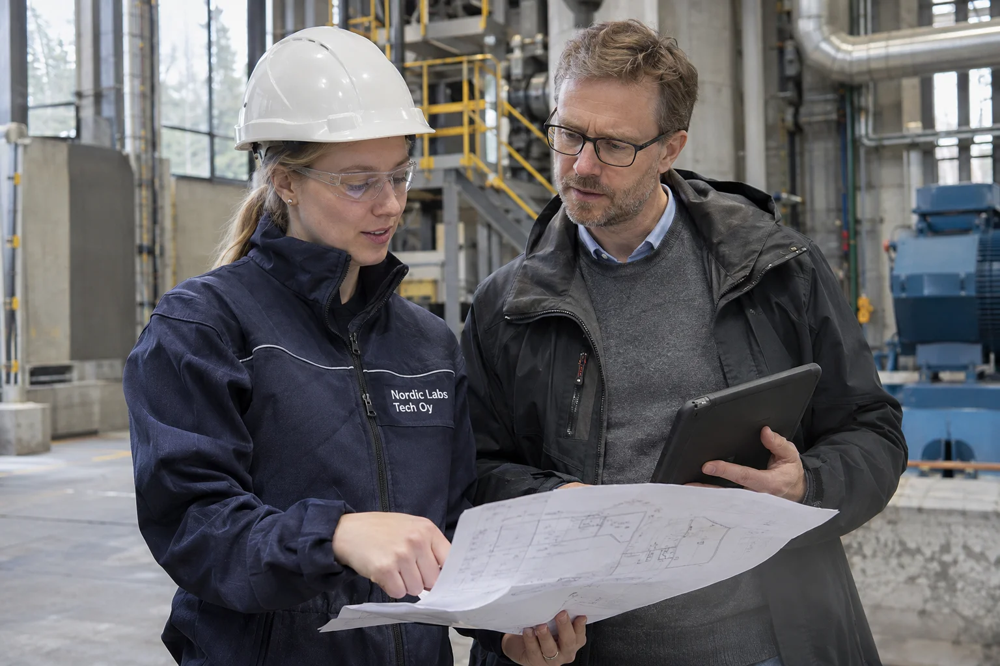
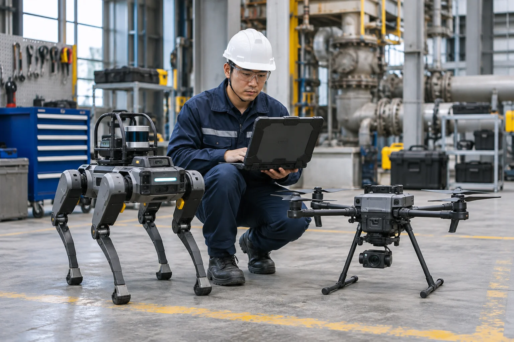
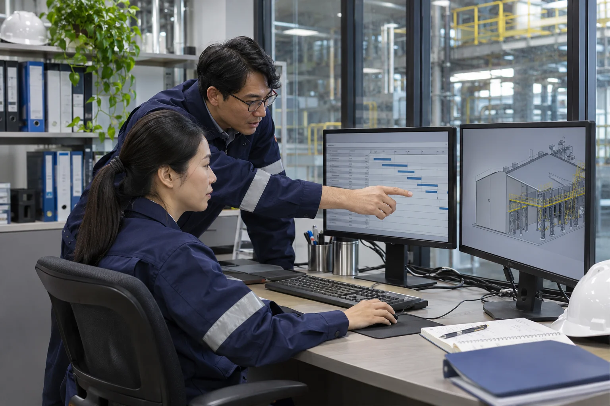
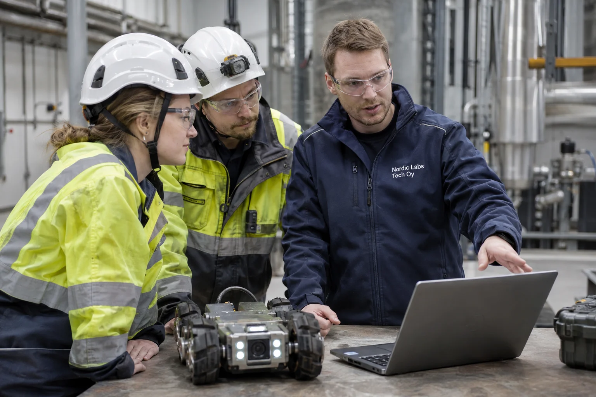

01 / Managed service
Robotics as a Service — Rental
Nordic Labs Tech Oy supplies and manages the solution under a recurring service agreement.
Equipment, software and ongoing services: one agreed service scope.
From site evidence to operational decisions
Explore reference deployments of our robotics systems, available as a fully managed service or a turnkey solution.
Choose your operating environment
Construction
Physical progress verification, construction deviations and reporting.
Illustrative scope, not guaranteed coverage or performance. Equipment, access, interfaces and acceptance criteria are agreed after assessment.
01 / Managed service
Nordic Labs Tech Oy supplies and manages the solution under a recurring service agreement.
Equipment, software and ongoing services: one agreed service scope.
02 / Customer ownership
The customer acquires the equipment and receives an installed, integrated solution under agreed licensing and support terms.
You own the equipment. Software licensing and optional support remain separate.
Under either commercial model, on-premises hosting on Nordic Labs Tech Oy-supplied hardware or deployment on customer-provided infrastructure may be available, subject to technical assessment and agreement.
Implementation journey / Construction
Target implementation timeline: six months, subject to agreed scope and technical prerequisites.
01Site & Systems Assessment
An agreed site scope, inspection routes and baseline BIM and schedule data.

02Solution Architecture & Infrastructure
A defined server, network and data-access setup for site imagery and progress records.
03Robotics & Sensors Deployment
A drone and quadruped configured for agreed capture routes, with operating procedures.

04Enterprise Systems Integration
Site observations linked to BIM elements and Primavera P6 activities through agreed interfaces.

05AI Configuration & Validation
Progress checks and deviation reports tested against site evidence and agreed acceptance criteria.
06Commissioning & Handover
Commissioned workflows, team training and operating documentation, with agreed support.

Commercial planning / Construction
Your deployment, component by component.
Selected scope: Industrial construction site: 20,000 m². Final pricing follows your agreed scope.
Rental
One-time scope fee
Purchase
One-time scope fee
Rental
Supplied under service agreement¹
Purchase
Owned hardware or your compute¹
Rental
Recurring equipment rental
Purchase
Customer-owned equipment
Rental
Setup fee or included, as agreed
Purchase
One-time commissioning
Rental
Initial integration scope²
Purchase
Initial integration scope²
Rental
Initial setup + agreed services²
Purchase
Initial setup + agreed changes²
Rental
Recurring agreed fees
Purchase
Agreed licence and recurring fees
Rental
Agreed recurring service
Purchase
Optional service contract
¹ Either model may use Nordic Labs Tech Oy-supplied on-premises hardware or your infrastructure, subject to assessment. ² Later integrations and changes are scoped separately. No prices are implied; final terms require a written agreement.
Your site. Your agreed scope.
Discuss Construction, your systems and the commercial model that fits your project.
Request a Tailored Proposal